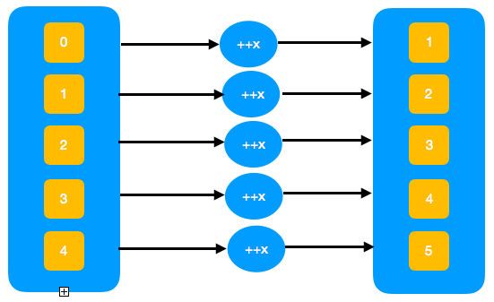
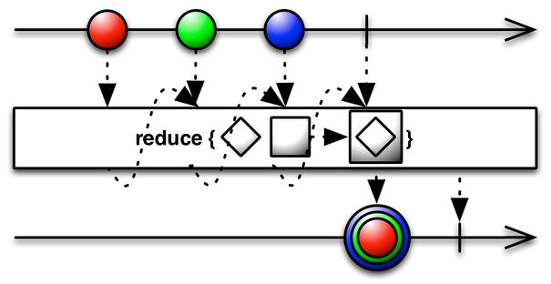
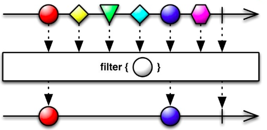

19 November 2017
Map Reduce and Filter are functional Idioms you frequently encounter in functional programming. This is first of the series of posts that shows the comparison of functional capabilities across languages.
Map, Reduce and Filter are higher order functions. In Mathematics a higher order function are function that operate on other functions either by taking them as arguments or returning them.
y1=f(x1) y2=f(x2) y3=f(x3) y4=f(x4)
I will interchangeably use the terms List/Array/Iterable/Sequence going forward. Assume relevant meaning from the context.

Now that we know what a Map is lets use it in different programming languages.Lets increment the numbers in the list by 1
JavaScript
list=[0,1,2,3,4]
function inc(num){
return ++num;
}
list.map(inc)
Output: [ 1, 2, 3, 4, 5 ]
Java
IntStream.range(0,5)
.map(x->++x)
.forEach(
x->{
System.out.print(x + " ");
}
);
Output: 1 2 3 4 5
Clojure
(map inc [0 1 2 3 4 5])
Output: (1 2 3 4 5 6)
Python
def inc(x):
return x+1;
list=[0,1,2,3,4]
for num in map(inc,list):
print(num)
Output:
1
2
3
4
5
The operation to be performed should be associative to attain correct result. For instance +,* are associative where as / and - are not.

Now that we know what reduction is lets solve a problem.Lets add up all numbers in the list.
JavaScript
numbers=[1,2,3,4,5]
numbers.reduce((a,b)=>a+b)
Output: 15
Java
System.out.println(IntStream.range(1,6)
.reduce((a,b)->a+b)
.getAsInt());
Output: 15
Clojure
(reduce + [1,2,3,4,5])
Output: 15
Python
numbers=[1,2,3,4,5]
reduce(lambda x,y:x+y,numbers)
Output: 15

Lets filter out only even numbers from a list.
JavaScript
list=[0,1,2,3,4,5,6,7,8,9,10]
list.filter(x=>x%2==0)
Output:[ 0, 2, 4, 6, 8, 10 ]
Java
IntStream.range(0,10)
.filter(x->x%2==0)
.forEach(x->{
System.out.println(x);
});
Output:
0
2
4
6
8
Clojure
(filter even? (range 0 11))
Output: (0 2 4 6 8 10)
Python
filter(lambda x:x%2==0,range(0,10))
Output:[0, 2, 4, 6, 8]
I hope you liked the post. Please share your comments.
{kind=link}
{kind=link}
{kind=link}